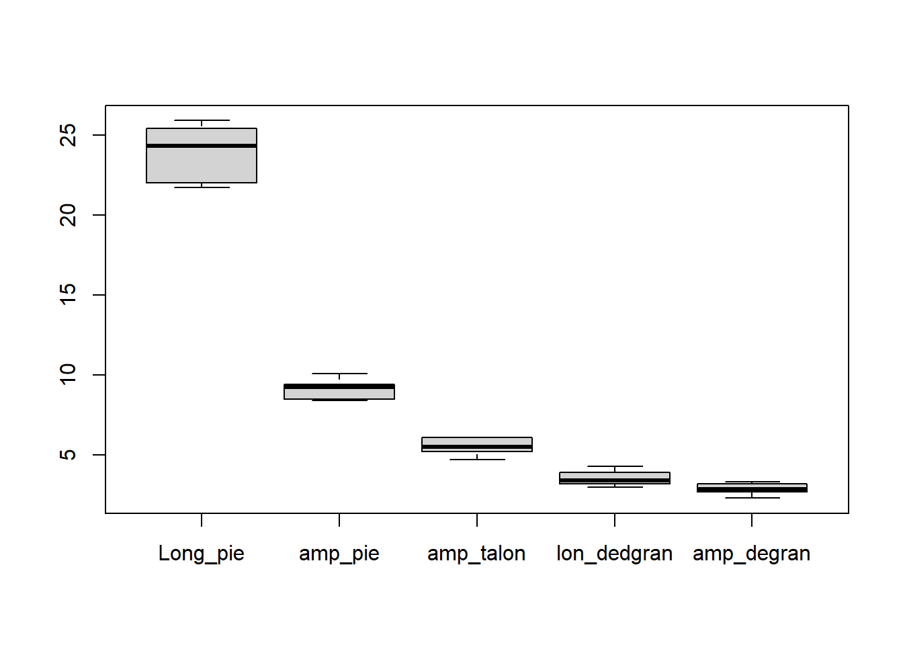

Es un conjunto de técnicas para analizar simultáneamente más de una variable. Usualmente se limita al análisis de variables continuas bajo el supuesto de que provienen de una distribución normal multivariable. (Aproximación clásica al análisis multivariable).
Vector aleatorio: Contiene la información sobre k variables medidas en un sujeto sacado al azar de una población particular.
\[\Large X= \left[ \begin{array}{cc} x_1 & \\ x_2&\\ .&\\ .&\\ .&\\ x_k & \end{array} \right] \]
Muestra:\(x_1, x_2,..., x_n\) sujetos, el i-ésimo sujeto tiene el vector.
\[\Large x_i= \left[ \begin{array}{cc} x_{i1} & \\ x_{i2}&\\ \vdots&\\ x_{ik} & \end{array} \right] \]
Matriz de datos:
Llamaremos matriz, A, de dimensiones (n × p) a un conjunto de n × p números reales, ordenados en n filas y p columnas.
Contiene la información sobre n sujetos de la población tomados al azar y a los cuales se les han medido las variables \(x_1, x_2,..., x_k\)
\[\Large X=\left( \begin{array}{cccc} x_{11} & x_{12} & \cdots & x_{1p} \\ x_{21} & x_{22} & \cdots & x_{2p}\\ \vdots & \vdots & \ddots & \vdots \\ x_{n1} & x_{n2} & \cdots & x_{np} \end{array} \right) \]
Determinante de una matriz
Dada una matriz A cuadrada y diagonal con términos \(a_{ii}\) se denomina determinante de la matriz, y lo representaremos por |A|, al escalar resultante de multiplicar todos los términos diagonales de la matriz. Supongamos una matriz de orden dos como
\[\Large X=\left( \begin{array}{cccc} 2 & 0 \\ 0 & 4 \end{array} \right) \]
si consideramos las columnas de esta matriz como vectores, cada vector está situado en uno de los ejes coordenados. El determinante de esta matriz es 2×4=8, igual al área del rectángulo determinado por ambos vectores.
Transpuesta de una matriz
Sea A una matriz con n filas y p columnas. La matriz traspuesta, denotada con \({\displaystyle A^{t}}\)
Está dada por:
\({\displaystyle (A^{t})_{ij}=A_{ji},\ 1\leq i\leq n,\ 1\leq j\leq m} {\displaystyle (A^{t})_{ij}=A_{ji},\ 1\leq i\leq n,\ 1\leq j\leq m}\) En donde el elemento \({\displaystyle a_{ji}}\) de la matriz original A se convertirá en el elemento \({\displaystyle a_{ij}}\) de la matriz traspuesta \({\displaystyle A^{t}}\)
Inversa de una matriz
\[A^{-1}=\frac{1}{|A|}*(A^T)\]
Matriz de varianzas y covarianzas
\[ \Large S=\left( \begin{array}{cccc} s_{11} & s_{12} & \cdots & s_{1p} \\ s_{21} & s_{22} & \cdots & s_{2p}\\ \vdots & \vdots & \ddots & \vdots \\ s_{n1} & s_{n2} & \cdots & s_{np} \end{array} \right) \]
Donde:
\[\Large cov(x,y)=\frac{\sum_{i=1}^{n}(x_i-\bar{x})(y_i-\bar{y})}{(n-1)}\]
\[\Large S_{jj}=var(x_j)=\sum_{k=1}^{n}\frac{(x_{kj}-\bar x_j)^2}{(n-1)}\]
##Coeficiente de correlación
Indica la fuerza y la dirección de una relación lineal y proporcionalidad entre dos variables cuantitativas estadísticas.
\[\Large cor(x,y)=\frac{\sum_{i=1}^{n}(x_i-\bar{x})(y_i-\bar{y})} {\sqrt{\sum_{i=1}^{n}(x_i-\bar{x})^2\sum_{i=1}^{n}(y_i-\bar{y})^2 }}\]
También es posible obtener la matriz de correlaciones
\[ \Large R=\left( \begin{array}{cccc} 1 & r_{12} & \cdots & r_{1p} \\ r_{21} & 1 & \cdots & r_{2p}\\ \vdots & \vdots & \ddots & \vdots \\ r_{n1} & r_{n2} & \cdots & 1 \end{array} \right) \]
Rango entre -1 y 1
Valores cercanos a -1 la relación es fuertemente negativa.
Valores cercanos a 1 la relación es fuertemente positiva.
Valores cercanos a 0 la relación es débil, es decir no hay una relación lineal
Vector de medias muestrales vector de dimensión p cuyos componentes son las medias de cada una de las p variables.
$$
x={i=1}^nx_i={i=1}^n=$$
Tipos de variables
Usualmente una base de datos es una combinación de diferentes tipos de variables: Sexo, Edad, Número de hijos, Estado civil, Fecha de nacimiento, etc.
Para muchos análisis solo trabajamos con un solo tipo de variables, por ejemplo, en el análisis clásico multivariable se asume que se tienen solo variables continuas.
Si tenemos una variable categórica que indique un grupo podemos subdividir la base de acuerdo a esa variable y realizar los mismos análisis dentro de cada grupo: análisis segmentado.
Asumiendo que todas las variables son continuas.
Ejemplo
La siguiente tabla presenta las mediciones realizadas a 10 estudiantes universitarios de sus pies.
| x1 | x2 | x3 | x4 | x5 |
|---|---|---|---|---|
| 24.2 | 9.4 | 5.5 | 3.0 | 3.2 |
| 21.7 | 8.5 | 6.1 | 3.2 | 2.6 |
| 25.4 | 9.6 | 5.5 | 4.0 | 3.1 |
| 25.0 | 10.1 | 5.3 | 3.5 | 2.7 |
| 22.0 | 8.5 | 5.7 | 3.1 | 2.7 |
| 25.9 | 9.3 | 6.1 | 4.3 | 3.3 |
| 22.2 | 8.6 | 5.2 | 3.9 | 2.9 |
| 21.7 | 8.4 | 5.0 | 3.2 | 2.3 |
| 25.5 | 9.2 | 6.1 | 3.3 | 3.2 |
| 24.4 | 9.4 | 4.7 | 3.6 | 2.8 |
Donde
\(x_1:\) Longitud máxima del pie
\(x_2\): Amplitud máxima del pie
\(x_3:\) Amplitud máxima del talón
\(x_4:\) Longitud máxima del dedo grande
\(x_5:\) Amplitud máxima del dedo grande
En R

## Long_pie amp_pie amp_talon lon_dedgran amp_degran
## Long_pie 2.94 0.83 0.16 0.37 0.42
## amp_pie 0.83 0.33 -0.03 0.08 0.09
## amp_talon 0.16 -0.03 0.24 0.01 0.07
## lon_dedgran 0.37 0.08 0.01 0.19 0.06
## amp_degran 0.42 0.09 0.07 0.06 0.10## Long_pie amp_pie amp_talon lon_dedgran amp_degran
## Long_pie 100.00 85.07 19.56 49.98 76.00
## amp_pie 85.07 100.00 -9.58 31.41 48.14
## amp_talon 19.56 -9.58 100.00 2.53 44.61
## lon_dedgran 49.98 31.41 2.53 100.00 44.38
## amp_degran 76.00 48.14 44.61 44.38 100.00## Long_pie amp_pie amp_talon lon_dedgran
## Min. :21.70 Min. : 8.400 Min. :4.700 Min. :3.000
## 1st Qu.:22.05 1st Qu.: 8.525 1st Qu.:5.225 1st Qu.:3.200
## Median :24.30 Median : 9.250 Median :5.500 Median :3.400
## Mean :23.80 Mean : 9.100 Mean :5.520 Mean :3.510
## 3rd Qu.:25.30 3rd Qu.: 9.400 3rd Qu.:6.000 3rd Qu.:3.825
## Max. :25.90 Max. :10.100 Max. :6.100 Max. :4.300
## amp_degran
## Min. :2.300
## 1st Qu.:2.700
## Median :2.850
## Mean :2.880
## 3rd Qu.:3.175
## Max. :3.300Para estimar la producción en madera de un bosque se suele realizar un muestreo previo en el que se toman una serie de mediciones no destructivas. Disponemos de mediciones para 20 árboles, así como el volumen de madera que producen una vez cortados. Las variables observadas son:
HT = altura en pies
DBH = diámetro del tronco a 4 pies de altura (en pulgadas)
D16 = diámetro del tronco a 16 pies de altura (en pulgadas)
VOL = volumen de madera obtenida (en pies cúbicos).
El objetivo del análisis es determinar cuál es la relación entre dichas medidas, estime:
El vector de medias y de la desv estándar
Matriz de varianzas y covariazas
Matriz de correlaciones
Resumen de las medidas
Grafico de dispersión
Existe una gran cantidad de herramientas para realizar análisis exploratorios para datos univariables. El objetivo fundamental es entender la información que se dispone.
Podemos decir que el análisis exploratorio de una variable continua se realiza mediante:
En una base de datos multivariable se puede realizar una exploración a varios niveles: